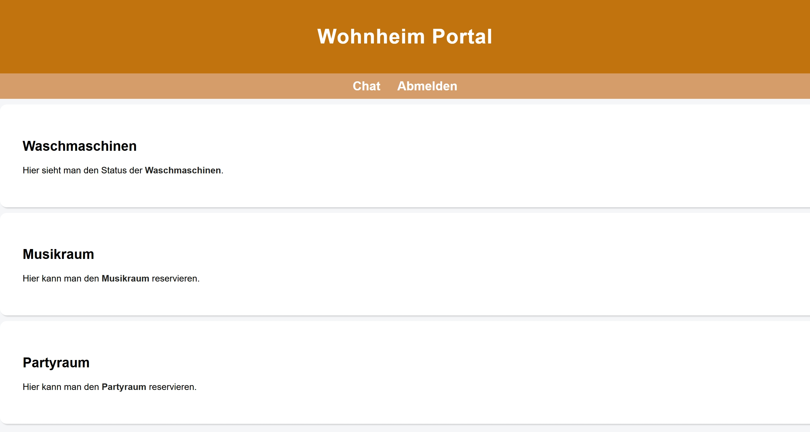

Kurze Beschreibung der implementierten Screens mit Verlinkung
Das Wohnheim Portal ist eine Webseite für Studierende, die in einem Wohnheim leben. Die Anwendung hilft dabei, gemeinsame Ressourcen wie Waschmaschinen, Musikraum und Partyraum einfacher zu organisieren.
- Startseite: Der Benutzer kann zwischen Login und Registrierung wählen.
- Login: Bereits registrierte Benutzer können sich anmelden.
- Registrierung: Neue Benutzer können ein Konto erstellen.
- Dashboard: Übersicht über Waschmaschinen, Musikraum, Partyraum und Chat.
- Waschmaschinen: Anzeige, welche Waschmaschinen frei oder belegt sind.
- Musikraum: Auf der Musikraum-Seite kann der Benutzer sehen, ob der Musikraum verfügbar ist. Die Seite dient dazu, den Musikraum für eine bestimmte Zeit zu reservieren.
- Partyraum: Auf der Partyraum-Seite kann der Benutzer den Partyraum für Feiern oder Treffen buchen. Dadurch sollen Doppelbuchungen und Missverständnisse vermieden werden.
- Wohnheim-Chat: Bewohner können miteinander kommunizieren.
Screenshot des Hauptscreens
Der folgende Screenshot zeigt den Hauptscreen der Anwendung. Als Hauptscreen wurde das Dashboard gewählt.
